Useful things, built on Raspberry Pis.
LED panels that play your photos and your music, an e-paper board that tells the house when the pilot is home, and a handful of small tools that each do one job. The first is free for anyone to build.
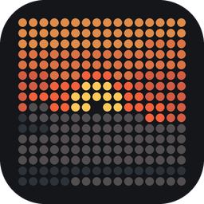
Spotipi Photo
A glowing picture frame for the wall: your photos, then the album cover the moment Spotify starts playing. Built on Spotipi, by Ryan Ward.
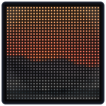
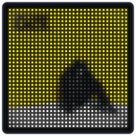
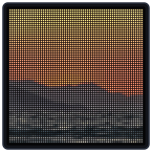
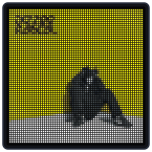
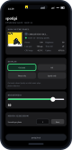
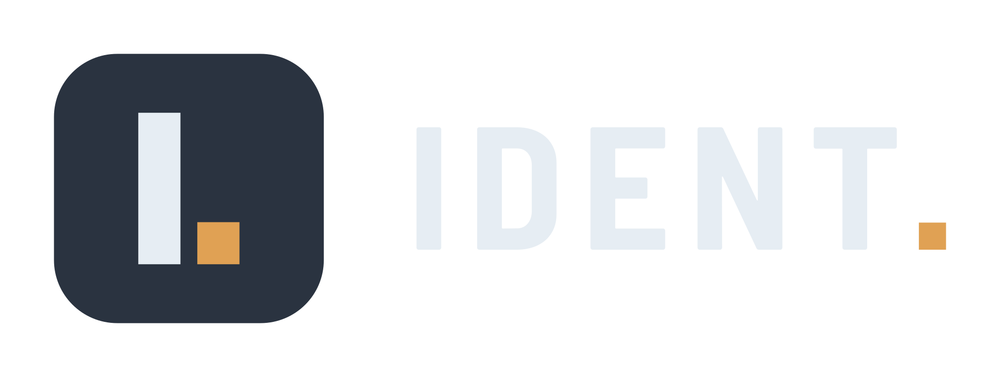
The wall board that answers “when are you back?” It reads a pilot’s roster; the roster never leaves the device.
In active development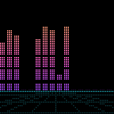
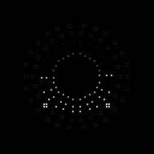
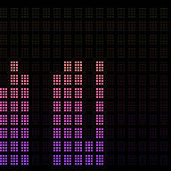
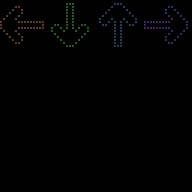
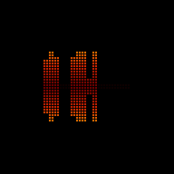
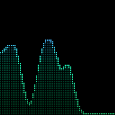
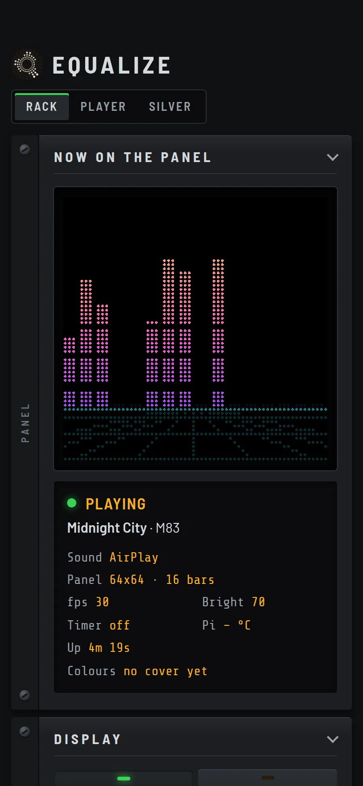
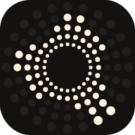
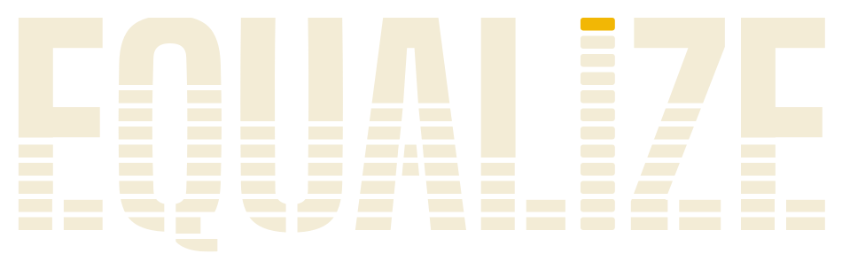
Watch the music. Spotify and Apple Music on an LED panel.
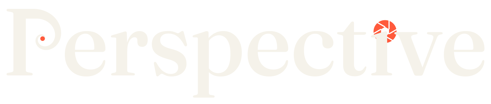
Finds the well-composed photos in Apple Photos and gathers them into an album.